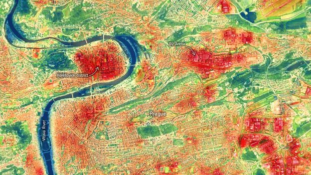

Reducing urban heat using smart placement
Urban areas are increasingly affected by rising temperatures due to dense infrastructure and human activities. This phenomenon, known as the Urban Heat Island effect, results in cities being significantly warmer than surrounding rural areas. As a consequence, there is a sharp increase in energy consumption, particularly due to air conditioning.
This project proposes a data-driven approach to mitigate this issue by optimizing the placement of urban green spaces. Instead of randomly adding greenery, the system uses a constraint-based optimization model to determine the most effective locations for maximizing cooling impact while considering real-world limitations such as land availability and budget.
